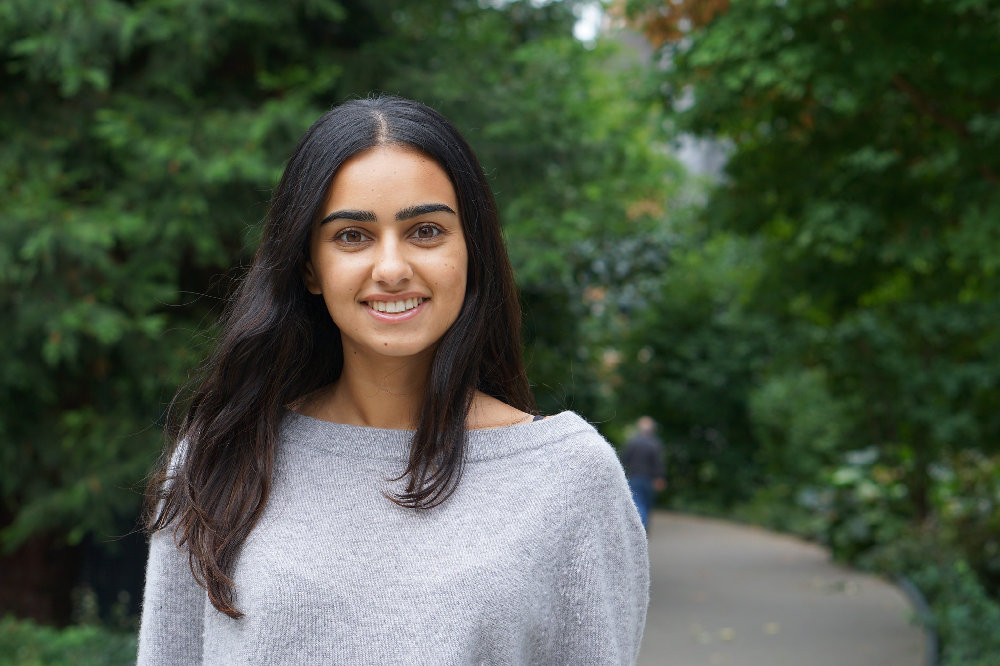

My name is Simran Sood and I'm a Master's Student in Biostatistics at the University of Washington. I have a Bachelor's degree in Bioengineering from Santa Clara University, where I conducted research in protein engineering. My past experiences include internships at life science companies QIAGEN and more recently, Thermo Fisher Scientific in 2025. At Thermo Fisher, I Built R pipelines for mass spectrometry data analysis and visualization at Thermo Fisher Scientific, co-authoring a published technical note.
I am interested in biostatistics and statistical modeling, particularly in how it can be used to guide and optimize the development of therapuetics.
For more information about me, please see my resume, or reach out via email or linkedin.
ssood3@uw.edu
Biostatistics Master's Student
University of Washington